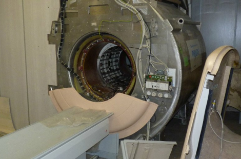

Монтаж медицинского оборудования, осуществленный специалистами – основной фактор безотказной и предсказуемой работы медтехники в течение всего периода эксплуатации. Профессиональная установка избавляет лечебное учреждение от многих проблем, связанных с неправильной установкой и повреждением сложной высокотехнологичной аппаратуры. Положительные эффекты грамотного монтажа проявляются как в медицинском аспекте (повышение надежности и безотказности техники, безопасности и качества медицинских услуг), так и в экономическом (снижение затрат на ремонт и восстановление некорректно установленного оборудования).
В силу большого значения правильного монтажа для работоспособности и долговечности техники необходимо внимательное отношение к этому процессу. Его должны осуществлять специалисты, инженеры высокой категории, желательно, чтобы это были сотрудники фирмыпоставщика или профильного сервисного центра, знающие все технические особенности устанавливаемой аппаратуры и правила эксплуатации.
Стартовая точность настроек и режимов, корректная балансировка измеряющей аппаратуры – важнейшие условия точных диагностических и лечебных манипуляций. К сожалению, многие виды новейшего зарубежного оборудования поставляются на отечественный рынок без русскоязычной документации, что затрудняет самостоятельную настройку и выравнивание рабочих параметров.
Поэтому для полноценной эксплуатации устройств и использования всех доступных режимов и настроек необходимо привлекать к установке медицинской техники квалифицированных специалистов.
Монтаж медицинского оборудования обязательно должен включать этап пробного запуска и оценки функциональности в тестовом режиме: медицинский персонал получает возможность удостовериться в работоспособности техники, ознакомиться с её устройством и принципом действия и впоследствии уверенно применять для лечения пациентов. Правильно выполненные установка и запуск способствуют эффективной и корректной работе сложной техники медицинского назначения.
Наши специалисты свяжутся с вами
в течение 15 мин
Демонтаж медицинского оборудования – это современная процедура, предоставляющая собой законный комплекс профессиональных услуг по разборке и перевозке любого медицинского оборудования. Всем медицинским учреждениям, юридическим лицам, которым предстоит демонтаж медицинского оборудования, не обойтись без обращения в специализированную компанию, предоставляющую лицензированные услуги в этой области. Это направление деятельности требует особых знаний, высокого уровня подготовки, тонкости в исполнении, специального оборудования со стороны компании, которая осуществляет демонтаж медицинского оборудования. Компания «ТомМедСервис» имеет все соответствующие документы позволяющие проводить демонтаж техники любого уровня сложности. Мы работаем как с обычным оборудованием, так и с опасным.
Цена на услугу демонтажа оборудования формируется из учёта множества факторов. Это и количество объектов для монтажа, сроки работ, уровень сложности, опасности. Чтобы узнать точную цену, нужно связаться с менеджером нашей компании, который сделает расчёт.
Выбрав нашу компанию в качестве своего надёжного партнёра, вы получите следующие преимущества: